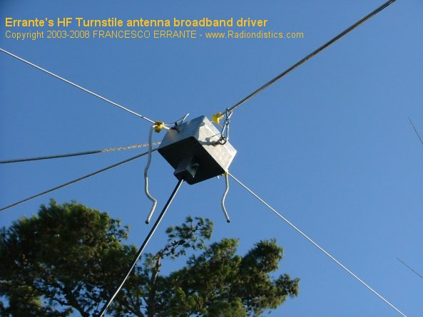

|
Planning a trip to Sicily? Then,
make sure you won't be feeding the Mafia!

|
|
|
If you have a scientific interest in the physics of the
radio, you should browse this site as an e-book!
|
|
|
|
The
ERRANTE's HF Turnstile antenna broadband driver
NOW, also available in the MULTIBAND
VERSION
An all-in-one solution for
coupling, balancing and phasing the cross-dipole antenna for the HF
spectrum.
|
 |
|
ERRANTE's HF Turnstile antenna broadband
driver.
Freq. range: 1 to 30 MHz
Input imp.: 50 Ohm, unbalanced
Output imp.: balanced 2 x 70 Ohm or 2 x 450 Ohm for the Errante's multiband
system
Outputs phase shifts: 0, 90, 180, 270 degrees
SWR @ band-center: 1:1
Insertion loss: -0.01 dB
RF power: 4 KW CW
Sockets type: SO-239
Weight : 5 Kg ca.
|
|
�
ERRANTE's HF
Turnstile antenna broadband driver : what it is, how it works and what
it does.
by Francesco Errante
The Errante's turnstile antenna driver, is a broadband
radioelectric circuit based on our own original virtual ground balun patented design.
A turnstile antenna, which is also known as cross-dipole or
quadripole is the top choice when a quasi-omnidirectional radiation
pattern is requided in a horizontally polarized antenna system. � (see the 1937, George H.
Brown's original patent application)
When it comes to point to point and broadcast radiocommunications through the
ionospheric radio-propagation, such systems have the advantage of following
the wanted signals, no matter what changes in the direction of propagation
the sky makes.
Trans-ionospheric effects include refraction, amplitude and phase
scintillation, signal delay and polarisation rotation. Such changes always
affect the strength of the wanted signal during ionospheric radio propagation
reception (fading, evanescence, QSB) and can easily reach a 20 dB loss.
A turnstile antenna system driven by this device of ours will recover
that loss and on average all signals are 10 to 15 dB higher compared to what
a single dipole would extract in the same conditions.
Untill now, making a proper turnstile antenna for the short wave bands used
to be a mammuth task and no previous system could allow multiband operation
owing to their own delay line limitation.
The device presented hereby is, instead, the ideal solutions to manage a
cross dipole as you would do with a single one. It, infact, exhibits the same
properties as our own virtual ground balun, while making easy to drive 2
identical dipoles or 2 identical fan dipoles in a turnstile
configuration, thanks to its unique phasing system. By eliminating the
need for a delay line, our system also eliminates all the loss of signal that
inevitably comes with it, therefore, the quantity of energy tranferred to
each of the 2 dipoles is precisely the same, this will translate in a truly
symmetrical radiation patten.
Where fan-dipoles cannot be used through lack of space, multiband operations
can also be achived by employing trapped dipole branches. NOW, also available in the Errante's 225 Ohm, multiband
monopoles version. (Errante's 225 Ohm, multiband HF antenna
system)
The turnstile antenna system, as presented hereby,
it's the top choice for digital communications over the HF spectrum, such as
the e-mail over the HF services and the like.
|

Prices:
Euro 1250,00 +V.A.T. and shipping costs, for the 2x 70 Ohm output model.
Euro 1650,00 +V.A.T. and shipping costs for the 2x 450 Ohm output model.
For an useful currency converter click here
RADIONDISTICS' products carry an unconditional lifetime
guarantee.
|
|
|
�
|
�
All the concepts, methods, designs and devices presented on this
web site
are the original novelty works of FRANCESCO ERRANTE.
Patents & Copyright © 1985- of FRANCESCO ERRANTE.
Material is governed by the Copyright, Designs and Patent Act.
No reproduction, in whole or in part, without written permission.
Copies of these documents made by electronic or mechanical means, including information storage and retrieval systems, may only be employed for personal use.
All rights reserved.

|
All rights reserved. Copyright © 1985- Francesco Errante
www.Radiondistics.com - Tel.(+39) 339.180.1313
|
|